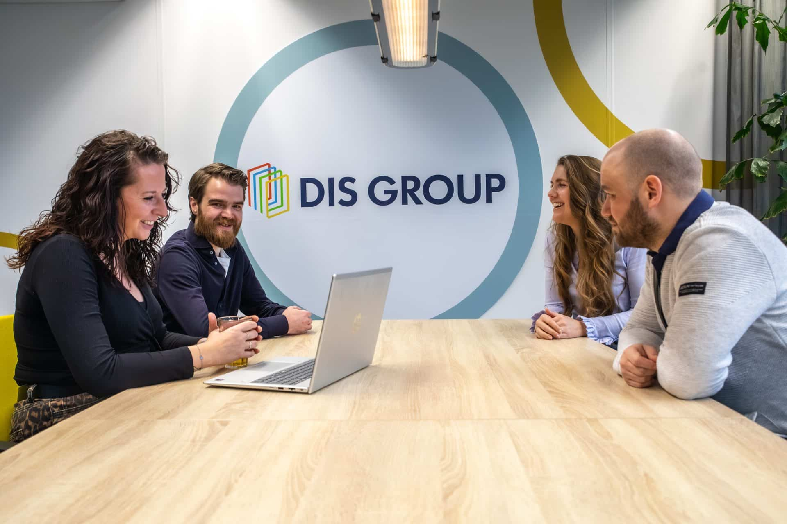

Ontdek onze diensten
Van vraagstuk naar werkende oplossing.
Functioneel beheer
Functioneel beheer en optimalisatie van Business Central en 4PS omgevingen, met volledige focus op bedrijfscontinuïteit.
Meer over functioneel beheer
Consultancy
Begeleiding bij implementatie en optimalisatie van Business Central en 4PS, ondersteund door deskundig en helder advies.
Meer over consultancy

Development
Ontwikkeling van betrouwbaar maatwerk voor Business Central en 4PS, volledig afgestemd op specifieke processen en behoeften.
Meer over development
Power BI
Vertaling van data naar duidelijke Power BI rapportages die structuur bieden en besluitvorming versterken.
Meer over Power BI

Nieuwe dienst
Agentic AI
Slimme AI-assistenten die het voorwerk doen in 4PS en Business Central, met menselijke goedkeuring.
Meer over Agentic AI
Meer inzicht. Meer resultaten.
Meer grip op je Business Central en 4PS Construct omgeving.
Wij helpen organisaties om het maximale uit hun 4PS Construct omgeving te halen. Wij zorgen voor stabiliteit, doorontwikkeling en inzicht, zodat jij kunt focussen op je core business.
Of het nu gaat om dagelijks beheer, advies, development of datagedreven sturing: onze specialisten staan naast je. We denken mee, zijn resultaatgericht en leveren oplossingen die direct waarde toevoegen.
Met onze diensten op het gebied van ERP systemen in functioneel beheer, consultancy, development en Microsoft Power BI bieden we één compleet pakket. Denk aan een goed ingerichte en stabiele omgeving tot slimme uitbreidingen en heldere Power BI-rapportages en dashboards op basis van data uit 4PS Construct. Het resultaat is dat je processen goed zijn ingericht en je veel efficiënter kunt werken. In de praktijk gaat dit je een hoop tijd én geld opleveren.
Kortom, DIS Group is jouw betrokken partner voor een toekomstbestendige ERP-omgeving die meegroeit met je organisatie.

Benieuwd wat wij voor jouw organisatie kunnen betekenen?
Neem contact op
Neem contact op
Enkele van onze opdrachtgevers